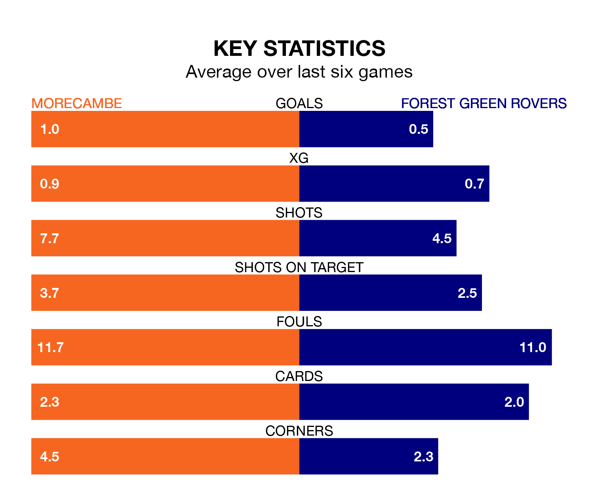

Morecambe and Forest Green Rovers will both be looking for points in Saturday's kick-off at the Mazuma Stadium to end their losing streaks.
The two teams have both gone three EFL League Two games without a win. Morecambe have picked up six points from their last six games, while Forest Green have earned just three.
Forest Green are bottom of the table after 44 games, of which they have won nine and drawn nine, earning 36 points.
Morecambe are 10 places ahead of Rovers in 14th, with 17 wins and nine draws putting them on 60 points.
In the last 10 years, Morecambe and Forest Green have played each other on 10 occasions. Morecambe won four of them, Forest Green three, and they drew three times.
On average, the Shrimps scored 1.3 goals and the Green 1.2 in those matches.
Their last meeting was on September 30, when Morecambe won 2-1 away.
With 41 goals in 44 games so far this season, the Green are the league's lowest scorers with 0.9 goals per game. And they are conceding more than average, letting in 77 goals at a rate of 1.8 per game.
The Shrimps are also below average scorers, with 1.4 goals per game, compared to a league average of 1.5. They have conceded 1.7 goals per game.
Morecambe's last match was on April 13, a 2-0 loss against Stockport County.
Forest Green lost 6-0 against Wrexham last time out, also on April 13.
Updated: 11:31 (UTC), 15/04/24